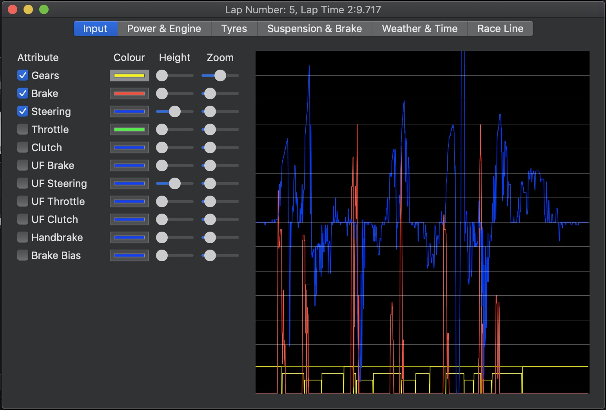
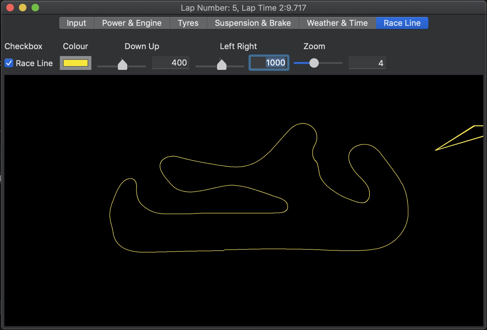
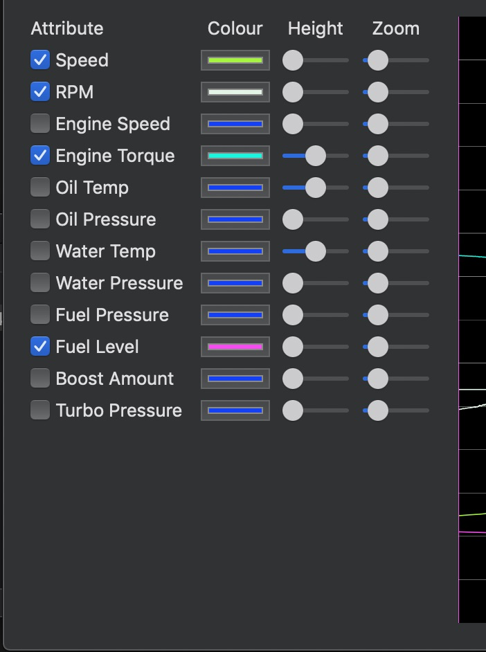

Get StartedGet Started
Get StartedGet StartedRough Idea Project Cars 2 Lap Windows.
Lap window is where you can select different telemetry attributes from specific laps to be displayed in the lap window and the combined telemetry window, so you can analyse multiple laps as well.

The tabs are seperated into different groups of telemetry.
Inputs are grouped into inputs from the driver.
Power & Engine shows speed rpm etc and engine specific telemetry.
Grouped into all four tyres so you can analyse front right (FR), front left (FR), rear right (RR) and rear left (RL).
Suspension & Brake allows you to view all four corners of the cars suspension and brake telemetry.
Weather & Time shows the weather and the current time of the lap which can be good for analysing where time was gained or lost.
Race line is the race line the driver took you can move the race line up and down and left and right because not all tracks are the same. The triangle in the right corner is the wind direction.
Attributes are all the different types of telemetry you can look at.
To help seperate the different attributes when analysing use the colour pallete to change the line colour.
Use the height and zoom to help view the telemetry graph lines.
Displays the selected graph lines.